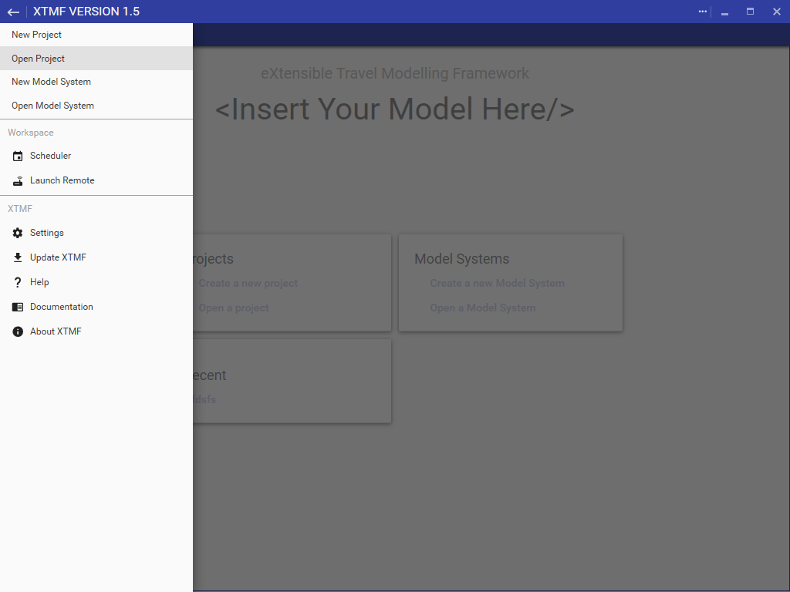

Getting Familiar with XTMF
The XTMF Interface
XTMF 1.6 in its most basic form functions as a single window user experience. The interface allows the user to work with projects and model systems, the underlying format of the XTMF work-flow. Multiple model systems and projects can be active at the same time.

Window Menu
XTMF 1.5 now uses a single global menu for all user-end operations. Pressing the hamburger menu icon in the top left of the XTMF window will open the side-bar menu. The side-bar menu has everything from creating new projects to launching the scheduler window for an overview of all active and completed model system runs.
Start Window
Projects are designed to help organize your work-flow within XTMF. Projects contain multiple model systems and provide logical grouping of model system runs. In order to run a model system, it must also contained within a project.
After you have selected ‘Create a new project’ you will be prompted to enter a name. Project names do have some restrictions. The name entry dialog will inform you if the name entered is invalid.
Otherwise you can just press Enter or click on the button ‘OK’ to create the new project. Once project creation is completed, the interface will automatically navigate to the newly created project page.
Help Window
The XTMF help window enumerates all modules that have been identified (and loaded) from the file system. Navigating through the module list will display its properties in the right hand pane. The documentation text included with the module is provided on a module-level bases. If documentation is missing for a specific module, it is the responsibility of the module author to provide any documentation related text for its proper usage within XTMF.
XTMF Settings
Working with Multiple XTMF Installations
In most cases you will only have a single installation of XTMF. There are cases when people want more than one installation of XTMF. Normally each user on a given machine will have their own unique configuration unless a local XTMF configuration is saved in the XTMF’s installation directory. In order to do this, you will need to create a configuration file called ‘LocalXTMFConfiguration.xml’ in the root of the installation directory. If this is detected XTMF will prioritize this configuration over the standard user configuration location. Doing this requires that the user have access to the installation directory.
XTMF 1.3 added the ability to create a local configuration from the settings page. After creating a local configuration, the application will reload under the new context. The settings page provides information about which configuration file is being used by XTMF. In the event a local configuration exists, an option is provided to remove the occurrence and revert to the shared XTMF configuration. The local configuration will be created under the name ‘Configuration.xml’.
Changing the Look and Feel of XTMF
Version 1.5 of XTMF offers the ability for users to change the appearance of their XTMF interface with palettes and swatches provided by the underlying "Material" look and feel. Under the Settings page, users are free to choose from a multitude of primary and accent colours. In addition to primary and accent colours, a light and dark theme setting is also available. A dark theme will replace all window backgrounds with a close-to-black colour, whereas the light theme will maintain the standard light - white colours for the backgrounds.
Creating a Custom Interface Customization
XTMF no longer provides support for customization which was available in 1.3 Please use the built-in colour and palette chooser when deciding on a new customization.